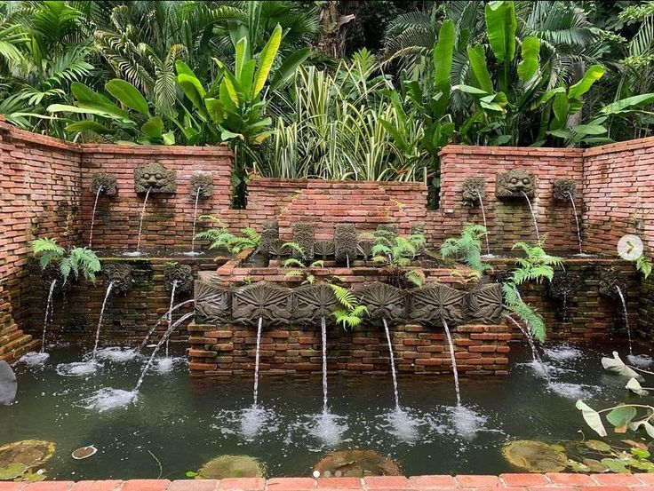

More Information
Click here to sign up as a volunteer with Fort Canning Park!
Park Size: 18 hectares
Park lighting hours: 7.00pm to 7.00am
Nearby Parks/Park Connectors: Dhoby Ghaut Green, Istana Park, Raffles Place Park
Accessibility: Wheelchair accessible (from drop off at Cox Terrace roundabout)
A VENUE FOR CELEBRATIONS
Fort Canning Park is a venue for celebrations. Its expansive, sprawling lawns play host to concerts, theatre productions and festivals such as Shakespeare in the Park, Ballet Under the Stars, Shakespeare in the Park and Films at the Fort, while weddings, parties and gatherings are a regular sight in the park's venue spaces. Its ancient artefacts are a must-see for history buffs, and its lush greenery and expansive lawns offer a variety of arts, heritage and nature experiences. Whether you are drawn by the park's ancient artefacts and rich heritage or simply its tranquility, this hilltop park offers something for the whole family.
HISTORY
- Fort Canning Park, an iconic hilltop landmark has witnessed many of Singapore's historical milestones.
- The hill once sited the palaces of 14th century Kings and served as the Headquarters of the Far East Command Centre and British Army Barracks.
- The decision to surrender Singapore to the Japanese on 15 February 1942 was also made on the hill, in the Underground Far East Command Centre, commonly known as Battle Box.
HISTORICAL GARDENS
Today, Fort Canning Park features nine historical gardens:
- Pancur Larangan
- Artisan's Garden
- Sang Nila Utama Garden
- Jubilee Park (Phase 1)
- Raffles Garden
- First Botanic Garden
- Farquhar Garden
- Spice Garden
- Armenian Street Park
Pancur Larangan
A freshwater spring used to flow from the face of Fort Canning Hill at this location. In ancient times, it was known as Pancur Larangan, or the 'Forbidden Spring' as it was used as a bathing place by the noble ladies of the royal court of Singapura. This ancient bath, which would have been an important part of the palace, has been re-created in the 14th-century Javanese style.
This garden features a commissioned mural wall handcrafted in natural volcanic rock which details life in Fort Canning Park from 14th century to the 19th century, as well as the socio-cultural influence of water in different eras. The mural wall is designed by Mr Eng Siak Loy.
Artisan's Garden
History of the Artisan's Garden
The Artisan's Garden was once the site of the craftsmen's workshop and living quarters in the 14th century. Craftsmen who enjoyed royal patronage lived and worked here, making fine goods for the residents on this hill.
This ancient artisans' workshop was also one of the few palatial areas open to non-royals. It was located here on the lower eastern slope to be accessible to commoners as other sides of the hill were surrounded by forests and salt marshes.
Artisan's Garden: Today
Today, the space is one of the last archaeological dig sites that has been retained in Singapore. Visitors can explore the refreshed interpretive space to better appreciate what the site used to be, as well as learn about the archaeological excavations and their findings on Fort Canning. There is also a decked activity space which will regularly host archaeology-related workshops.
Sang Nila Utama Garden
The Sang Nila Utama Garden is named after the first ancient king of Singapore and reimagines the Southeast Asian gardens of old.
Such gardens were integral parts of palaces such as the one which stood on this hill in the 14th century.
The garden has traditional features such as:
- a symmetrical layout typical of these spaces,
- a series of Javanese split gates that mark the entrance of new zones - 'realms',
- and a reflective pool which can serve as a meditative refuge
Ornamentals such as Magnolias, Ixoras and perfume plants such as Gardenias, Vallaris are planted for their significance in ancient Javanese culture. Fruit trees such as Duku, Rambutan & Pomelo are planted too; John Crawfurd recorded seeing giant specimens of these when he first arrived at Fort Canning and concluded that they were likely cultivated by the earlier settlement that lived on the hill.
Jubilee Park (Phase 1)
Jubilee Park sits on the western slope of Fort Canning Park, which used to host a range of recreational options for Singaporeans, such as River Valley Swimming Pool, Van Kleef Aquarium and the National Theatre in the 20th century. At one time, it also had play features such as swings. This green space at the foot of Fort Canning Hill has been restored as a family-friendly node where children can play with swings, see-saws, logs and slides hugging the hill slope. There is also space for outdoor art installations, performances and events.
The next phase of enhancement has commenced to see the renovation of existing buildings at Foothills to accommodate gallery space and new F&B facilities.
Raffles Garden
This garden is named after Sir Stamford Raffles (1781-1826), the founder of modern Singapore. Whilst Raffles is most remembered for his public life in the former British colonies in Southeast Asia, he was also an avid naturalist, who spent his free time studying botany and wildlife.
Inspired by his love for plants, the Raffles Garden showcases the diverse plant species that Raffles encountered in Southeast Asia. It includes species collected, studied or planted by Raffles and his fellow naturalists, some of whom were also his closest friends.

First Botanic Garden
Singapore's first botanical and experimental garden, which was founded in 1822 and spanned 20 hectares, focused on growing spices and economic crops to boost Singapore's economy. Nutmeg and clove were the primary crops grown here – at one time, the garden held over 600 nutmeg trees and 300 clove plants. Some of the other crops grown were Gambier, Pepper, Sugarcane, Coffee and Tea. The garden was closed in 1829, and the land was reallocated.
This garden has been restored at the foot of Fort Canning Hill, near its original location. It stretches into the streetscapes between the hill and Bras Basah Road and features the crops introduced to Singapore in the early colonial era.
There are five zones in the planting of the streetscapes:
- Latex & resin: Local communities utilised a variety of latex and resin long before rubber became an important crop.
- Timber: Tree species with useful timber and bark were cultivated in the garden in 1822
- Ornamental & fragrant trees: The first botanical garden was a popular sightseeing destination and was the closest thing in Singapore to a recreational park at the time.
- Forest fruits: Fruit trees such as durian, rambutan and duku were found on the hill suggesting that agriculture was practised before the arrival of Raffles, when fruit trees were typically grown in ancient royal gardens
- Coastal riverine: Coastal and riverine vegetation once grew along the area of the present-day Stamford Canal.
Farquhar Garden
The Farquhar Garden is named after Major-General William Farquhar, the first British Resident and Commandant of Singapore. As a keen naturalist, Farquhar commissioned and compiled natural history drawings of the unique wildlife he encountered in the Malay Peninsula. In this garden, visitors are invited to explore and interact with some of the species that Farquhar found noteworthy through ‘living paintings’ in giant frames. Examples include guava, jujube, taro and gambier.
Spice Garden
Raffles was inspired to start a spice plantation by the luxuriant growth of flora he saw around this hill. It was first situated near his residence at Government House and later moved to this area further down the hill.
Raffles experimented with spices that he had collected from Bencoolen and inferred that the growth of abundant vegetation was made possible by the agreeable local climate and soil. Raffles’ small spice plantation here proved successful, leading him to later transform it into what was to become Singapore's first botanical garden.
Here, the garden represents Raffles' experiments by showcasing spice-inspired plantings in a series of cascading terraces and re-created plantations. Open spaces interspersed in the landscape also provide vantage points for photo opportunities.
The Spice Garden will be further enhanced in the phase two development to include a gallery trail which will share about the importance of spices in Singapore’s history. This will be made possible with the generous support of Nomanbhoy & Sons Pte. Ltd., a spice trading company with over 100 years of history in Singapore.
Armenian Street Park
Under a multi-agency project, part of Armenian Street was pedestrianised earlier 2019 to create a new park and public space for people and events, as part of larger plans to connect Fort Canning Park, Bras Basah, Bugis, and the Civic District together to form an expanded arts, cultural and heritage precinct. A planting scheme that relates to the site context creates synergies between the outdoors and the surrounding buildings, such as the Peranakan Museum and Armenian Church.
Additionally, the main park parcel showcases plants in mobile planter boxes that represent the Peranakan culture. Visitors can find plant collections curated according to recipes (such as curries and Nyonya desserts), various uses in everyday life (flowers for hair adornments and plants used for potpourri), as well as their symbolic value (eg. Fingered Citron which symbolises happiness and longevity) to the Peranakans.
The park has supporting amenities which cater to a series of regular events to further add vibrancy to the expanded arts, cultural and heritage precinct.
LOCATE US
How to get here
By MRT: Alight at Fort Canning Station (Exit B), Clarke Quay Station (Exit E) or Dhoby Ghaut Station (Exit B).
Fort Canning Station: Come out from Exit B, turn left to Jubilee Park.
Clarke Quay Station: Come out from Exit E, turn left and walk along Coleman Bridge. Turn left again at the end of Coleman Bridge and head towards the pedestrian overhead bridge (100m away) along River Valley Road. Cross the overhead bridge and you will enter Fort Canning Park.
Dhoby Ghaut Station: Come out from Exit B, cross Penang Road, turn left and keep a lookout for the tunnel leading to Fort Canning Park.